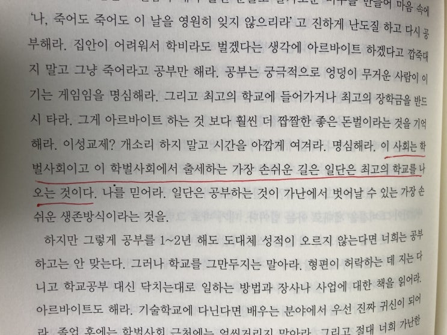
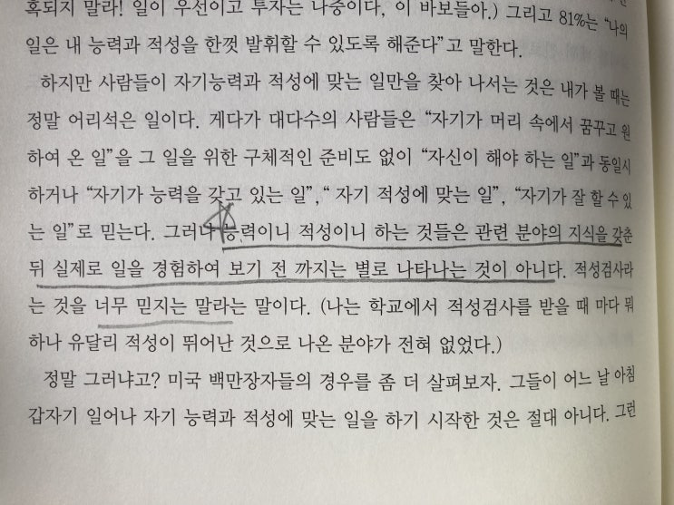
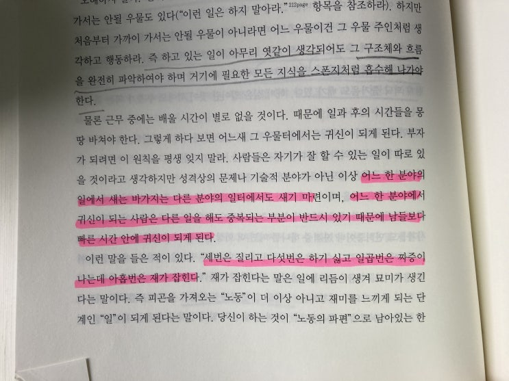
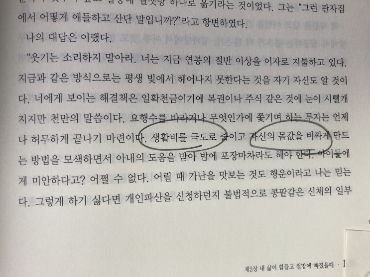

내가 감히 어떻게 세이노 선생님의 책에 대해서 서평을 할 수 있는가. 불가하다.
그럼에도 불구하고 선생님의 가르침을 사람들에게 조금이나마 더 알려보고자 블로그 내용 서평으로 적어본다.
세이노 선생님께선 강남 어느 빌딩의 건물주라고 하신다 (진짜인진 모른다). 한 사람이신걸로 나오긴 하지만 가끔 글을 보
면 2명 이상의 복수의 사람이 글을 작성하는 듯한 느낌도 있다. 아마 바쁘실땐 대필을 하시는걸지도.
아무튼 세이노 선생님에 대해서는 아는바가 없지만, 한가지 확실한건 얼굴도 모르는 세이노 선생님 덕분에 20대 전역을
하면서 지금까지 쉴새 없이 달려오는 인생에서 큰 힘을 얻고 방향성을 가지며 살아왔단 것이다.
특히 모든 경제활동의 기본 체력을 길러주는 경제적 태도 (Economic attitude, 아조씨가 만든 말입니다) 와 직업윤리
(Work ethics)를 기르는데 큰 도움이 되었다.
선생님의 글 속에는 정말 좋은 글들이 많이 있지만, 여기서는 아조씨가 어릴 적 살아가는데 도움이 많이된, 사회 초년생들
에게 도움이 될 만한 글 위주로 한번 올려본다.
세이노의 가르침 PDF는 어딜가든 구할 수 있으니 생각이 있다면 한번 읽어보시길.
수백만원 짜리 강의가 공짜입니다 여러분 ㅎㅎㅎㅎ
명심해라, 이 사회는 학벌사회이고 이 학벌사회에서 출세하는 가장 손쉬운 길은 일단은 최고의 학교를 나오는
것이다. 나를 믿어라. 일단은 공부하는 것이 가난에서 벗어날 수 있는 가장 손쉬운 생존방식이란 것을.
세이노의 가르침 중

여기서 좋은 학벌이란, (한국 토종 기준으로) 서울대, 연고대, 포항공대, 카이스트, + 아주 가끔 성균관대 서강대 한양대를
뜻한다. 물론 당연히 가장 좋은 학벌은 서울대이다. 아무것도 비빌대 없는 학사 졸업생이 졸업장만으로 환영받을 수 있다
면 단연 서울대이다 (포스텍/카이스트는 석/박사 학위쯤 되면 좋음).
창업할 자신 있는거 아니라면, 꼭 서울대 가라.
참고로 창업해도 서울대가 좋더라.
능력이니 적성이니 하는 것들은 관련 분야의 지식을 갖춘뒤 실제로 일을 경험하여 보기 전 까지는 별로 나타나
는 것이 아니다.
세이노의 가르침 중

자 이제 졸업했으면 (학부기준) 취직을 해야지.
다들 여기서 이런 고민을 한다. "나는 뭘 잘할 까? 나의 적성은 무엇일까? "
정말 쓸때없는 고민이다.
당신이 어딜 들어가건 간에 좆같다고 느낄 가능성이 120%이다.
이러한 취준생을 등처먹는 컨설턴트, 뭐 학원, 무슨 고수, 유투버 다 믿지 마라 (요즘 모 대기업 인사팀 나온 유투버가 유명
하던데... 그 대기업은 바로 ㅋㅋㅋㅋㅋㅋㅋㅋㅋㅋㅋㅋㅋ 쓰레기 기업으로 유명한... ㅋㅋㅋ) .
자신이 어릴 적부터 두각을 나타낸 일이 있지 않다면 일단 자신이 갈 수 있는 일명 가장 좋은 직장을 가라.
부테린이 네이
버에 들어갈 필욘 없잖아.
거시서 좆같다고 느껴도 일단 1년은 일해봐라. 그 다음 다른 일 하거나 회사를 옮겨도 괜찮다. 한국은 특이하게 직업의 "낙
수효과"가 있는 곳이라서 처음 잡은 직장 이상으로 물을 거슬러 올라가기가 쉽지 않다. 1년만 일하더라도 나중 커리어에
상당히 도움이 될꺼다.
하다보면 자기가 이 일이 맞는지 안맞는지 느낌이 올것이다. 느낌 알잖아~
하고 있는 일이 엿같다고 생각되어도 그 구조체와 흐름을 완전히 파악하여야 하며 거기에 필요한 모든 지식을
스폰지처럼 습후해 나가야 한다.
세이노의 가르침 중
어느 한 분야의 일에서 새는 바가지는 다른 분야의 일터에서도 새기 바련이며, 어느 한 분야에서 귀신이 되는 사
람은 다른 일을 해도 중복되는 부분이 반드시 있기 때문에 남들보다 빠른 시간 안에 귀신이 되게 된다.
세이노의 가르침 중

일을 시작했다면, 그때부터는 그 일의 귀신이 되기 위해서 노력하라.
일터는 원래 즐거운 곳이 아니다. 일터가 즐거웠으면 에버랜드마냥 돈주고 표 끊고 들어가야 하잖아? ㅋㅋㅋ
돈이 이동하는 방향의 반대방향이 행복이 이동하는 방향이다. 그러니 회사에선 너무 많은 것을 기대하진 말자. 하지만 일
은 열심히 해야 한다. 최고가 되기 위해. 그러다 보면 정말 희안한 일이지만 그 일 자체가 재미있어지게 되고 성과도 덩달
아 높아지게 된다.
(예전에 게임 이론이라는 책을 읽은 적이 있다. 게임은 "학습" 의 과정에서 느끼는 즐거움을 즉각적인 피드백을 통해 극대
화한 것이라는 내용이었다. 일은 오랜 시간이 피드백에 들지만 확실히 배우면서 즐거움이 생긴다)
생활비를 극도로 줄이고 자신의 몸값을 비싸게 만드는 방법을 모색하면서 아내의 도움을 받아 밤에 포장마차라
도 해야 한다.
세이노의 가르침 중

그렇다면 직장생활하면서 어떻게 살아야 할까?
포장마차 하란 말은 아니다.
핵심은 지출을 줄여서 종자돈을 만들고, 그 돈으로 투자나 사업체를 만들어야 한다는 것이다. 아조씨 생각에는 정 할꺼 없
으면 집을 사도 괜찮다 (투자 + 주거 + 월세/전세 비용절감).
저 당시에 아조씨 비트코인 1개에 20만원씩 다섯개 살까도 생각해 봤지만, 뭐 간이 작아서 못하겠더라 ㅋㅋ
그리고 동시에 몸값을 높여야 한다. 영어를 배우건 중국어를 배우건, 회사일에서 귀신이 되는건 기본이고 자신이 다른 곳
에서 팔릴 수 있는 '객관적'인 스펙도 마련을 해야 한다. 어쩌면 이 단계에서 자신이 '투자'에 재능이 있다는걸 발견하는 친
구들도 있을 수 있다. 그렇다면 회사일 열심히 하면서 투자도 병행해라.
월급은 마약이다. 받아 먹고 있다보면 늑대가 개로 변하는, 사람을 가축으로 만드는 마약이다.
언제나 야생성을 가지고 살아야 한다는 걸 잊지 말고 살자.
사회초년생 친구들한테 도움이 되었음 좋겠어~
오늘은 여기까지~
감사합니다. 왈오옹오왈.